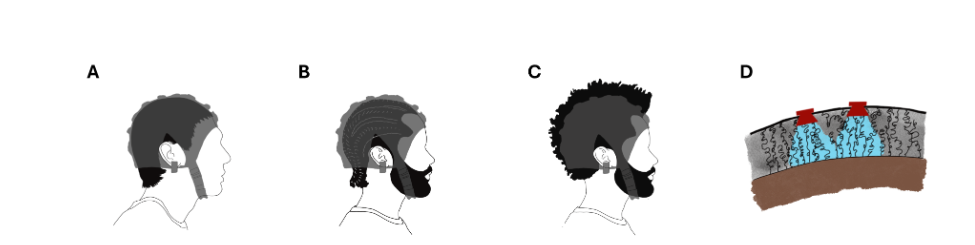

Novel Design • Seeking Patent Funding
Synaptive is developing a novel EEG electrode that achieves reliable scalp contact across all hair types: afro-textured, curly, coily, straight, without modification or extended setup. Because neuroscience should work for everyone.
The Problem
EEG electrode caps allow approximately one centimetre of space between electrode and scalp. That works fine for straight, fine hair. For thick, voluminous, curly, and coily hair (more common in people of African and Caribbean heritage) it fails. Routinely. Systematically.
The consequences aren't technical abstractions. Labs list protective hairstyles as exclusion criteria. Participants with kinky hair require 30–40 additional minutes of setup that still doesn't achieve full contact. Some have had minor scalp abrasions from repeated electrode placement. Many never come back for follow-up sessions.
The data that results: the datasets underpinning BCI algorithms, clinical rehabilitation tools, and consumer neurotechnology. It reflects that exclusion. Baked in from the first moment of data collection, and propagating forward into every model trained on it.
"Exclusion at the hardware stage does not remain isolated; it propagates downstream and impacts all methods that use BCI datasets." Synaptive, Graz BCI Conference submission
High impedances and elevated noise from poor scalp contact, with standard gel remediation proving less effective for curly hair.
Substantially longer preparation times that still fail to achieve full electrode contact, increasing participant fatigue and drop-out.
Labs listing braids, cornrows, and locs as exclusion criteria, effectively barring entire communities from contributing their data.
Machine learning models trained on unrepresentative data embed and amplify existing biases, performing worst for the populations most excluded from training.

Our Work
Existing solutions, including pin-based and braided-anchor electrodes, represent meaningful progress, but none achieve the full target: reliable scalp contact, wet electrode impedance levels, no required hair modification, and minimal setup time, for every hair type.
After eighteen months of iteration and three Cambridge entrepreneurship programmes, Synaptive has developed a novel electrode design that meets those criteria. It is novel enough that we believe it warrants patent protection. We are currently raising funds to begin the filing process.
We are not building a workaround. We are building the electrode that should have existed from the beginning.
Reliable scalp contact across straight, wavy, curly, coily, and afro-textured hair, without preparation or modification.
Signal quality at impedance levels equivalent to current clinical-grade wet electrode systems.
No extended preparation. No additional gel protocol. No researcher specialist knowledge required for diverse hair types.
Designed to meet the requirements of academic research, clinical EEG, and consumer BCI applications.
Journey
Systematic exclusion of afro-textured hair from EEG research documented through literature review and practitioner survey.
Cross-disciplinary team formed spanning UCL, Imperial College London, and UNC Greensboro.
Three Cambridge entrepreneurship and innovation programmes completed, developing technical and regulatory expertise alongside the engineering.
Peer-reviewed research documenting the scale of EEG exclusion and the practitioner case for electrode redesign.
Novel electrode design ready for patent filing. Currently fundraising to cover IP costs and support the next development stage.
Research
Aspire Create, University College London • Department of Bioengineering, Imperial College London • Department of Kinesiology, University of North Carolina at Greensboro
A mixed-methods survey of 31 EEG researchers and practitioners revealing that 74% reported hardware-related challenges with diverse hair types. Qualitative analysis identified five themes: signal degradation, extended setup burden, explicit participant exclusion, downstream data loss, and a systemic researcher knowledge gap. The paper argues that electrode redesign is a prerequisite for equitable BCI.
BCI systems are moving from laboratory prototypes into clinical rehabilitation, assistive communication, and consumer applications globally.
Machine learning models trained on data from predominantly one demographic do not merely underperform for excluded groups; they embed and amplify the original exclusion. As Synaptive's Graz BCI submission notes, AI models trained on unrepresentative data will inherit and amplify existing biases.
Black and Hispanic individuals are, respectively, twice and 1.5 times as likely to develop Alzheimer's disease. They exhibit distinct neural signatures from white individuals. BCI diagnostic tools built without their data may not only fail for these populations; they may actively mischaracterise disease states in the communities bearing the greatest burden.
Fixing the electrode is not a peripheral concern. It is where inclusive neuroscience begins.
Voices from the Field
Every response from our researcher survey, included in full. 34 EEG researchers and practitioners from around the world.
It is difficult to place electrodes, then electrodes get tilted with time during session. Then the signal looks bit noisy as comparatively.
Artefacts need to be filtered out. Noise signals affect efficiency of data processing.
Certain types of curly hair, afro hair styles, and braided hair are often difficult to work with, due to electrode placement and gel. Typically it requires more patience and willingness to give up on certain electrodes.
Poor impedance and significant noise in the data. EEG caps are not designed to accommodate all hair types and depend on thin hair types.
Difficult to get good contact with scalp or impedances. It is difficult to make good contact with the scalp.
Impedance levels stay high, very high S/N ratio, impedance is flaky.
Had to put a lot more gel to get to the scalp. There are gaps between the chip and scalp in the electrodes.
Difficulties getting readings; need to use more gel than with Eastern or Caucasian hair; hairstyles like braids prevent the cap fitting well. EEG caps are designed for participants with Caucasian hair.
High follicle density means it's harder to get wet electrode contact with the scalp. Unable to part hair successfully.
In fact it was smoother than regular straight hair and data quality was good. I did not face any such challenges.
Current EEGs aren't versatile enough for taking measurements for people with diverse hair types. Only a specific population of individuals can be utilised for studies.
Noisy signal not rectified by usual solutions, cap not fitting close enough to scalp, gel cleaning issues harder for individuals.
Low connectivity, high signal noise, gel can be hard to apply correctly. Compression of the hair pushing against the cap causes a large gap between the head and the electrode.
Even someone with loose kinky hair was an issue; it took an extra 30-40 min to cap, and we were not fully successful. A grad student shoved wooden sticks through the electrodes. The difficulty of capping actually meant that we scraped the scalp so hard there was a bit of blood.
Poorer electrode signal, way more noise, lower adherence to scalp.
I had weave and box braids throughout my EEG experiences and found researchers and clinicians struggling to place the electrodes and the cap. Cleaning was a mess — I still had gel in my hair days later and had trouble washing it out.
Hair is usually too messy and it is difficult to place the EEG cap tensely on the subject's scalp. Curly hair tends to occupy much more space than straight hair.
Even for long or dense afro hairstyles, it works perfectly in 90% of cases. Only wigs or braided hair in a ponytail style do not work.
It's harder to move hair out of the way to get direct electrode-to-skin contact. Impedance is generally higher and fewer electrodes are fully prepped.
People with coily hair generally have dedicated wash days. Headsets are not designed with these hair types in mind. Dry headsets that fit over afro-like hair would be much better.
High impedance and higher variability with dry electrodes. Weak electrode-skin connection and higher resistance.
Not handle.
Generally we just exclude participants with this hair type because it complicates the research process, especially as we're not taught how to deal with these scenarios. It feels like that's a sentiment echoed by my colleagues across the world.
Length is the biggest issue. But curlier hair is easier to part when using gel and syringe because once parted it's more likely to stay.
Caps from non-EGI systems lift electrodes off scalp. EGI has a tall sensor net that works well with dense and curly hair.
Gel sometimes can hardly touch the scalp for thick curly hair. Electrodes can hardly stay still on the scalp by themselves.
Higher impedances, need more conductive gel, cap doesn't rest as cleanly on scalp.
With cornrows it was simply not possible. We would have needed to damage the braiding in order to get contact.
The set-up time is longer as some electrodes struggle to make good contact, so you need to re-gel them. I rather not choose the voluminous hair participants.
Collected data was harder to classify compared to participants with non-curly or non-kinky hair. Achieved classification was extremely poor.
Cap too small, not fitting with my locks, gel not adapted, left build-up, electrodes kept disconnecting. I had to start gelling my head 10-15 min prior to the session. Itchy gel, electrodes entangled with hair.
If a full head silicone cap is used, this pulls the hairs out as it catches on coarse hair. I never had a Black participant return for a follow-up reading.
We don't admit anyone into a study who has braids because it is very difficult. If the signal quality isn't good enough, we toss the data — wasted experiment.
Curly hair has not been a problem for me, however, I did not have any African phenotype participants with extreme density curls.
Scroll to see all 34 responses →
Really? I've had an EEG with natural hair and wasn't ever told to wash my hair with conditioner. Hmm.
9/10 techs have been very appreciative. Few may say something slick and I either ignore it or suggest they send another tech... Getting the glue out on long multi-day recordings can be a headache but I've found great tools and inexpensive products I keep on hand.
I washed it the night before, didn't use product, and then blew it dry. It frizzed up really bad but it was going to get messy anyway because of the glue. Afterwards I used warm olive oil to get the glue out of my hair.
I'd recommend moisturizing your hair a day before if it's going to be longer than a day. The glue will be hard to take out the more curly or kinky your hair is and you'll probably need a lubricant to get it out.
My EEG techs didn't try any combing or brushing after I told them not to... my hair was honestly pretty matted at the bottom. Areas with a larger percentage of PoC have better trained staff through experience.
I've been lucky a couple of times and had someone nice enough to braid my hair when they put the electrodes on. I will definitely ask them to in the future. It's a game changer.
I will warn you, it was a nightmare to take the glue out. I let the oil set for a day and then had to get all the glue crumbs out with a fine tooth comb. It was hell.
I'm not washing my hair and then not putting conditioner on it like it says. Do I just cancel the test? This test will ultimately show nothing and be a waste of time on top of not being inclusive for people of color with these hair requirements.
I am covered in glue. My hair was in cornrows and they used so much glue to keep the leads on. I've read so many things online but they apply to hair that's quite thin. I've lost some curls already.
I got one of my partners started on acetone. We're 30% complete. There is so much damn glue. I can't stand up to shower or wash my hair. I'm a fall risk.
Acetone will eat glue but it will also eat your hair and your skin. Chemical burns suck. Hair oil was the best — it got the glue out best and didn't leave me with work later.
Got a 22mo old with A TON of glue in his head because they had to reapply while he was in hospital. I can't cut it because it's stuck to his scalp.
Both exams were not able to produce clear results. The docs want to try the testing again and this time I'm refusing. I am missing out on medical information simply due to my hair texture and a lack of equipment prepared for it.
I am a nurse and my advice is to call the EEG department and ask to speak to an EEG tech. They will be able to tell you exactly what's workable. The instructions are often overkill.
Scroll to see all 14 patient experiences →
I usually prep a little longer than usual, and scrub the scalp in a cross or X pattern, starting from the middle. This just helps to move the hair out of the way more, especially for curly hair. I'll usually just tell patients that depending on signal quality, I'll have to reprep multiple times.
It is prevalent. But part of our job is learning to adapt to different situations. As for electrodes, they're already universal. In the clinical side, not research, we use the disc or cup electrodes. It's the industry standard. Can't get more universal than that.
There's too many things that are still done now because that's the way it's always been done. Hopefully in the next 10 years we get a shift in mentality once those techs leave the field.
I use a metal comb to part the hair as I measure and make little hair poofs all over the patient's head in the grid pattern. I've applied 72-hour ambulatory EEGs using this method and all the electrodes have stayed and the quality has remained very high.
There's no specific technique. Just take your time and part the hair. Data quality only suffers if the technologist doesn't apply the electrodes appropriately. Our target is the scalp.
I've found using long tipped q-tips helps with the parting of the hair while you're measuring and applying. If your lab has hair stylist parting clips those will also help.
There is no proven best method for applying to thick, curly or natural hair. It just takes time and patience. Each head will be different and so will the method you choose to use.
Scroll to see all 7 technician perspectives →
Early Adopters
The design is ready. We're now raising funds to file the patent and begin the next phase: getting the electrode into the hands of researchers who need it.
If you run an EEG lab and have experienced the frustrations of recording from participants with curly or afro-textured hair, we want to work with you. Early adopters will shape the final product and get priority access when we're ready to ship.
Register your interest
Sign-up isn't working just yet — for now, please email one of us directly and we'll add you to the list.
Team
Co-founder • PhD Researcher
University College London
Co-founder • PhD Researcher
Imperial College London
Co-founder • PhD Researcher
University College London
Research Collaborator
Department of Kinesiology, University of North Carolina at Greensboro.
Get in Touch
We're actively seeking research partnerships with labs conducting EEG studies, conversations with neurotechnology companies, and connections with investors who care about equitable hardware.
The design is complete. We are raising funds to file the patent and move into the next phase of development. The problem is real, documented, and solvable. If you want to be part of that, reach out.
Drop us an email and we'll get back to you.